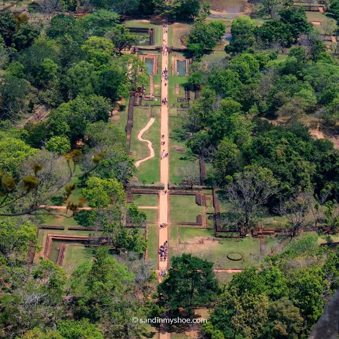
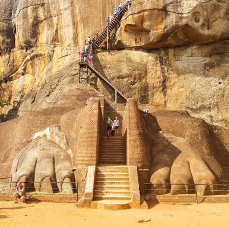
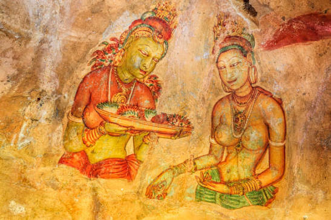
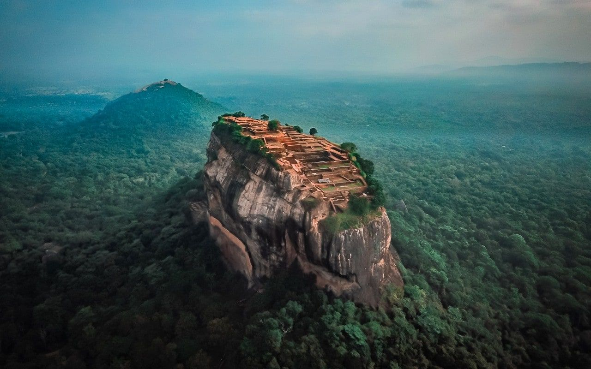
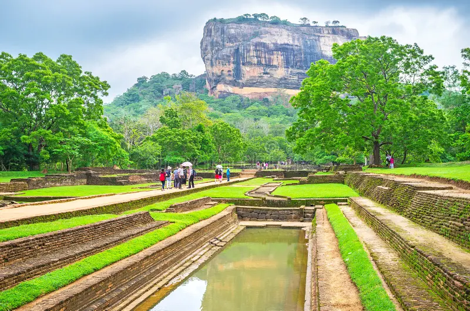

Discover the remarkable story of Sri Lanka's ancient Lion Rock, a magnificent fortress of kings, artists, engineers and monks.
Explore the HistorySigiriya is one of Sri Lanka's most remarkable historical and archaeological sites. Rising approximately 180 metres above the surrounding plains, the enormous rock dominates the landscape around it. Its natural height and steep sides made it an ideal location for defence, while the surrounding plains provided space for gardens, reservoirs and settlements.
The most famous period of Sigiriya's history began during the reign of King Kashyapa I, who ruled Sri Lanka from approximately 477 to 495 CE. During this period, the rock was transformed into an extraordinary royal centre containing palaces, defensive walls, gardens, pools, stairways and sophisticated water-management systems.
Sigiriya was not simply a fortress. It was also a carefully designed royal landscape. Architecture, art, water and nature were combined to create a remarkable environment around the rock. The remains visible today provide evidence of the advanced engineering and artistic traditions of ancient Sri Lanka.
The famous royal complex developed during the reign of King Kashyapa I.
The enormous rock rises dramatically above the surrounding landscape.
The monumental lion entrance gave Sigiriya its famous English name.
Sigiriya is recognised internationally for its outstanding cultural importance.
King Kashyapa I is closely associated with the development of Sigiriya as a royal residence and fortified centre. Historical traditions describe how he moved the centre of royal power to Sigiriya and transformed the enormous rock into a carefully planned palace complex.
The location offered both natural protection and a commanding view of the surrounding countryside. The steep rock faces made direct attacks difficult, while the walls, moats and gardens below created additional layers of protection.

One of the most impressive features of Sigiriya is its symmetrical garden complex. The gardens contain pools, channels, terraces and pathways that demonstrate careful planning and engineering.
During periods of heavy rainfall, water could be collected and directed through carefully constructed channels. The hydraulic system demonstrates the importance of water management in the design of the ancient complex.
The gardens were divided into different areas, including water gardens, boulder gardens and terraced gardens. Their design created a carefully organised landscape leading toward the enormous rock.

One of the most famous features of Sigiriya is the Lion's Paw Terrace. Visitors climbing toward the summit pass between enormous stone paws that remain from the monumental lion entrance.
The original entrance is believed to have been designed as a huge lion figure. Although much of the upper part of the lion has disappeared, the massive paws remain and provide an impressive reminder of the scale of the ancient construction.
Sigiriya is famous for its ancient frescoes depicting elegant female figures. The paintings demonstrate the sophisticated artistic traditions of ancient Sri Lanka.
The figures are shown wearing jewellery and colourful clothing, and the paintings have survived for many centuries in a sheltered area of the rock.
The frescoes are among the most recognisable examples of ancient Sri Lankan art and form an important part of the cultural significance of Sigiriya.

Another fascinating feature of Sigiriya is the famous Mirror Wall. The wall was originally finished with a highly polished surface, allowing it to reflect light and images as visitors walked along the pathway beside the rock.
The surface was carefully constructed using materials such as plaster and polished lime. Over time, however, the wall became much more than a beautiful architectural feature. Visitors who came to Sigiriya centuries ago began writing poems, comments and observations on its surface.
These writings are extremely valuable because they provide evidence about the people who visited Sigiriya after its royal period. Some inscriptions express admiration for the paintings, the beauty of the site and the surrounding landscape.
The ancient writings on the Mirror Wall show that Sigiriya continued to attract visitors long after King Kashyapa's reign. They provide historians with a glimpse into the thoughts and experiences of people who visited the site many centuries ago.
Today, the Mirror Wall is carefully protected because its ancient inscriptions are an important part of Sri Lanka's archaeological heritage.
The area around Sigiriya was associated with human activity and religious communities before the famous royal complex was constructed.
King Kashyapa I came to power and Sigiriya became closely associated with his reign and royal ambitions.
The gardens, defensive structures, palaces, frescoes and water systems were developed around the rock.
After Kashyapa's death, Sigiriya gradually lost its role as the main royal centre.
Sigiriya became associated with Buddhist monastic life, and monks occupied parts of the area for centuries.
Archaeological research helped reveal the importance of Sigiriya's architecture, art, gardens and engineering.
"Sigiriya stands as a remarkable meeting point of nature, architecture, art and engineering."
— The Legacy of the Lion RockFollowing the death of King Kashyapa, Sigiriya gradually changed from a royal centre into a place associated with Buddhist monastic activity. Monks occupied caves and other areas around the rock, continuing the religious importance of the location.
Over the centuries, the royal buildings and gardens were gradually abandoned and nature reclaimed parts of the site. Nevertheless, many important structures survived, allowing later generations to understand the complexity of the ancient city.
For centuries, Sigiriya remained surrounded by forests and gradually became less prominent. In the modern period, explorers, historians and archaeologists began studying the site and documenting its surviving structures.
Archaeological investigations revealed the extraordinary scale of the ancient complex. Excavations and conservation work helped researchers understand the relationship between the rock, the gardens, the water systems and the surrounding landscape.
Today, Sigiriya is one of the most important historical attractions in Sri Lanka and continues to be studied by archaeologists and historians.


Sigiriya is recognised as a UNESCO World Heritage Site because of its outstanding cultural, architectural and archaeological importance. The site represents an extraordinary combination of ancient engineering, artistic achievement, landscape design and historical development.
Today, the Lion Rock remains one of the most important symbols of Sri Lanka's ancient civilisation and cultural heritage.